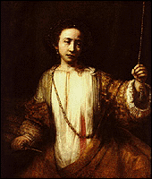

|
European 15th- to 17th-Century Art | |
|
(c) |
Rembrandt van Rijn |
|
Rembrandt's masterpiece "Lucretia" is the heart of a
collection of 15th- through17th-century portraits,
landscapes, still-lifes, and marine paintings. This
collection includes an
interactive program. | |